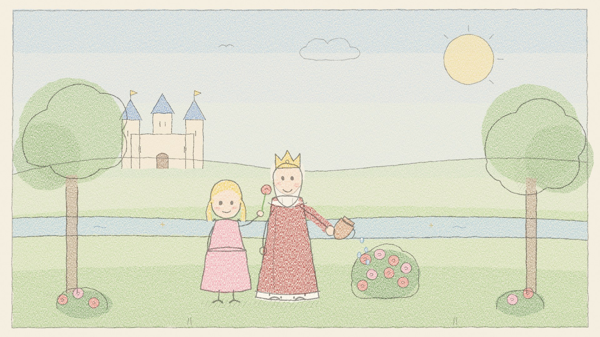

Le roi Midas et le toucher d'or
Le roi Midas, raconté tout en douceur pour l'heure du coucher, d'après « Le toucher d'or » de Nathaniel Hawthorne. 10 minutes d'écoute, avec une petite musique entre les scènes. Dans cet épisode : - Un roi qui aimait l'or voit son vœu exaucé : tout ce qu'il touche devient or, même sa petite Marygold. - L'eau de la rivière répare tout, et il comprend ce qui vaut plus que l'or. Sources : The Golden Touch Musique : Kevin MacLeod (incompetech.com), CC BY 4.0 De douces histoires pour le soir et l'heure du conte, racontées lentement par une voix chaleureuse. luongnv.com/podcast/stories
Écouter sur Once Upon a Time Show Télécharger le MP3 Transcription
Également disponible en : English, Tiếng Việt
D’après THE GOLDEN TOUCH.